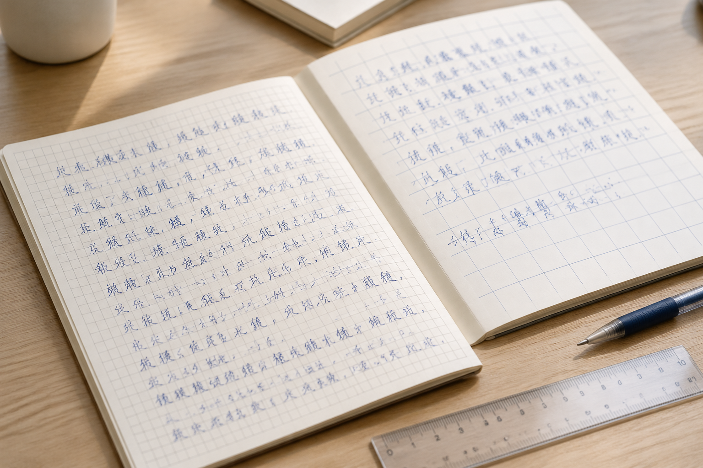

南京笔迹鉴定对比遇到方格纸，先别急着比较字的高度
写在大方格和小方格里的字，尺寸往往不同。格线既提供参照，也会约束落笔范围，比较时需要把两种作用放在一起看。

纸张格式会影响观感
南京笔迹鉴定资料中，练习本、会议纸和空白纸的书写空间不同。大格中的字看起来宽，小格中的字显得紧，不能只凭截图判断结构变化。先保留格线和纸边，确认原纸格式；没有可靠尺度时，不必从屏幕显示尺寸推算实际毫米数。
有格线也不能随意缩放
将两张图的格子调成同样大，前提是原格尺寸确实相同。若格子本身大小不同，强行对齐就会改变字的比例。模仿笔迹参考可以记录字在格中的相对位置，同时保留原始文件，避免经过多轮排版后再也找不到未经缩放的版本。
表格落款另看限制
模仿签名、模仿签字有时也落在固定栏位里，栏位高度和左右空间可能影响结果。完整表格与局部姓名配套保存，有助于理解约束。与空白纸署名比较时，应先说明场景不同，不把每处伸展或收缩都当成固定习惯改变。
挑选材料讲清条件
同类纸张和相近用途的自然材料，可以先放在一起阅读；其他材料仍保留独立组别。来源、时期和图像版本都应记在目录里。整理的目标是把条件交代清楚，而不是预先把所有照片处理得一模一样。